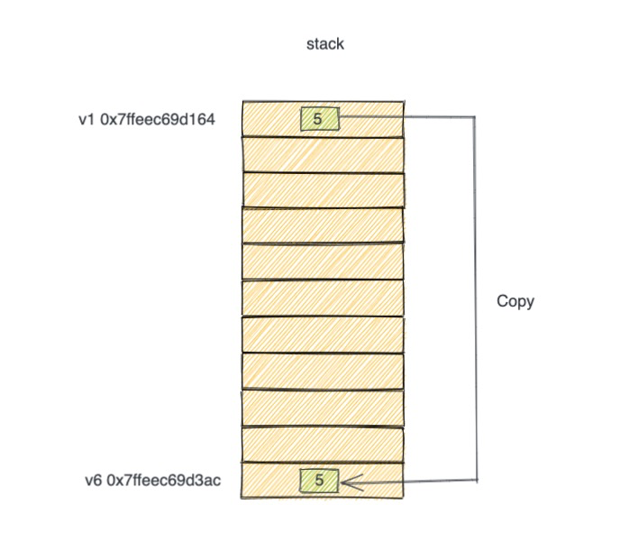
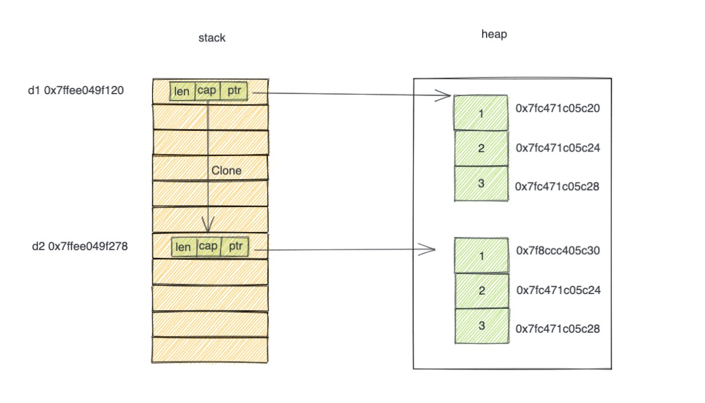
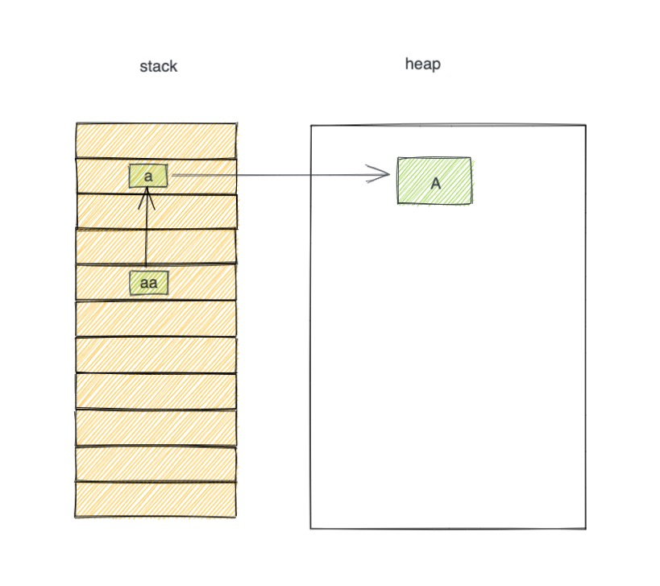
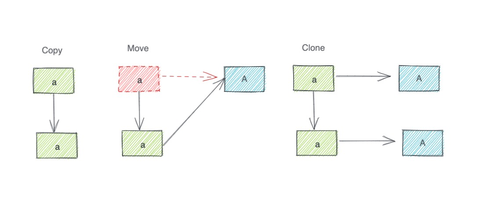
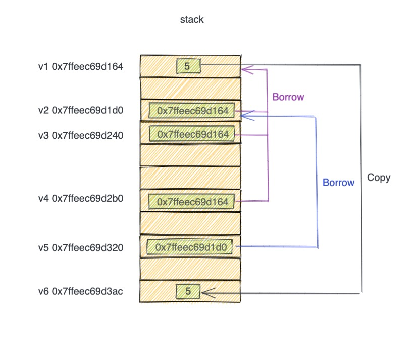

浅析Rust所有权Ownership (二) – Copy Move Clone 与 Borrow¶
Rust 位置与值绑定，涉及四种语义： Copy Move Clone Borrow 。本文对这些进行图示浅析。
Copy 语义¶
下面一段代码：
fn main() {
let v1 = 5;
println!("v1({:p})={:?}", &v1, v1); // v1(0x7ffeec69d164)=5
let v2 = &v1;
println!("v2({:p})={:p}", &v2, v2); // v2(0x7ffeec69d1d0)=0x7ffeec69d164
let v3 = &v1;
println!("v3({:p})={:p}", &v3, v3); // v3(0x7ffeec69d240)=0x7ffeec69d164
let v4 = v2;
println!("v4({:p})={:p}", &v4, v4); // v4(0x7ffeec69d2b0)=0x7ffeec69d164
let v5 = &v2;
println!("v5({:p})={:p} {:p}", &v5, v5, *v5); // v5(0x7ffeec69d320)=0x7ffeec69d1d0 0x7ffeec69d164
let v6 = v1;
println!("v6({:p})={:?}", &v6, v6); // v6(0x7ffeec69d3ac)=5
}
运行之后，打印的值放到了对应的 println! 的注释中，不同的机器运行结果会不一样。先关注 v1 和 v6 两个位置。
let v1 = 5; 在 stack 上创建了一个位置 v1。其值是 5。stack上地址是 0x7ffeec69d164。
let v6 = v1; 也在 stack 上创建了一个位置 v6，其值也是 5。这个值是来自 v1 的值进行按位复制得到，也就是将 v1 内存的 5 拷贝到 v6 的内存位置。v1 和 v6 各自对其值有所有权。两者相互没有影响，各自离开作用域的时候，释放各自的值。
这种把 stack 上的值按位复制创建新的值的称之为 Copy 语义。Copy 就是把原值复制一遍，粘贴到新的地方。
按位拷贝一般是 浅拷贝，即只拷贝 stack 上的数据，不拷贝 heap 上的数据。
Move 语义¶
再看另外一段代码：
fn main() {
let d1 = vec![1, 2, 3];
println!("d1({:p})={:?} d1.ptr({:p})={:p}", &d1, d1, &d1.as_ptr(), d1.as_ptr()); // d1(0x7ffee049f120)=[1, 2, 3] d1.ptr(0x7ffeebb18128)=0x7f8a2fc05c20
println!("d1.0({:p})={:?} d1.1({:p})={:?} d1.2({:p})={:?}", &d1[0], d1[0], &d1[1], d1[1], &d1[2], d1[2]); // d1.0(0x7fc471c05c20)=1 d1.1(0x7fc471c05c24)=2 d1.2(0x7fc471c05c28)=3
let d2 = d1;
println!("d2({:p})={:?} d2.ptr({:p})={:p}", &d2, d2, &d2.as_ptr(), d2.as_ptr()); // d2(0x7ffee049f278)=[1, 2, 3] d2.ptr(0x7ffeebb182c8)=0x7f8a2fc05c20
println!("d2.0({:p})={:?} d2.1({:p})={:?} d2.2({:p})={:?}", &d2[0], d2[0], &d2[1], d2[1], &d2[2], d2[2]); // d2.0(0x7fc471c05c20)=1 d2.1(0x7fc471c05c24)=2 d2.2(0x7fc471c05c28)=3
}
let d1 = vec![1, 2, 3]; 会在 stack 上创建一个位置 d1(0x7ffee049f120)，其值是一个 胖指针，姑且称之为 Vec。Vec有一个指针，姑且称之为 Vec.ptr(0x7ffeebb18128)，指向了 heap 上的一段位置 data(0x7f8a2fc05c20)，data存储了 [1, 2, 3]的值。data的地址都是在heap上。
let d2 = d1; 表达式，也是在 stack 上创建了一个位置 d2(0x7ffee049f278), 其值也是一个 胖指针， 是 Vec 胖指针按位复制得到的新的胖指针，姑且称之为 Vec'。
那么此时的Vec'.ptr(0x7ffeebb182c8) 和 Vec.ptr(0x7ffeebb18128)的值一样，都指向了 data(0x7f8a2fc05c20) 这个数据。按照其他语言的做法，data 就有两个指针。而 Rust 在创建 d2 和 Vec'之后，之前的 d1 和 Vec 将会失效。即 d1 的值移动到了 d2 里。这就是相对于 Copy 的 Move 语义。
顾名思义，Copy 是拷贝，原值和新值都存在，Move 是移动，原值被移动到新值的地方。
Clone 语义¶
对于上面的代码，因为 let d2 = d1; 发生了ownership 的 move，因此 d1 不能再使用。最后一行移除注释之后，执行将会报错：
error[E0382]: borrow of moved value: `d1`
--> src/main.rs:10:22
|
2 | let d1 = vec![1, 2, 3];
| -- move occurs because `d1` has type `Vec<i32>`, which does not implement the `Copy` trait
...
6 | let d2 = d1;
| -- value moved here
...
10 | println!("{:?}", d1);
| ^^ value borrowed here after move
想要修复这个错误，一种方法是修改代码如下：
fn main(){
let d1 = vec![1, 2, 3];
println!("d1({:p})={:?}", &d1, d1); // d1(0x7ffee049f120)=[1, 2, 3]
println!("d1.0({:p})={:?} d1.1({:p})={:?} d1.2({:p})={:?}", &d1[0], d1[0], &d1[1], d1[1], &d1[2], d1[2]); // d1.0(0x7fc471c05c20)=1 d1.1(0x7fc471c05c24)=2 d1.2(0x7fc471c05c28)=3
let d2 = d1.clone();
println!("d2({:p})={:?}", &d2, d2); // d2(0x7ffee049f278)=[1, 2, 3]
println!("d2.0({:p})={:?} d2.1({:p})={:?} d2.2({:p})={:?}", &d2[0], d2[0], &d2[1], d2[1], &d2[2], d2[2]); // d2.0(0x7f8ccc405c30)=1 d2.1(0x7f8ccc405c34)=2 d2.2(0x7f8ccc405c38)=3
println!("{:?}", d1); //
}
clone 方法，不是 Copy 那种按位复制的浅复制，而是深复制。stack 上的值进行按位复制，stack上关联的 heap 的数据也进行递归复制。如下图所示：
通过上述代码示例，我们了解到在位置绑定的时候，rust 的 i32 执行的是 Copy 语义，Vec
Borrow 借用¶
Clone 可以让 Vec 这样的数据结构进行深复制。heap 上的内存复制，如果数据量比较大，这样的 Clone 还是比较耗时以及浪费内容空间。对于 stack 上多个位置共享一个 heap 内存数据，Rust 提供了借用语义(Borrow)。借用 使用地址操作符&，与其他语言取地址的语义类似。例如Golang使用&取地址，通过地址可以读取内存上的值。使用&的变量是一个指针，也可以称之为引用(Reference)。
从上图可以看出，stack 有多个变量引用了 heap 上的数据。悬垂指针的一个问题就在于多个引用同时存在的时候，释放的时机不对。rust 解决这个问题的思路依然是借助 Ownership。即将上面的对 aa 对 A 引用。换成 aa 对 a 的引用。
位置 a 对 A 有引用。通过前文栈 堆的介绍。a 持有 A 的所有权。新创建的位置 aa，不是直接对 A 进行引用。而是对 a 进行借用。借用和引用的最大区别在于，借用不会有所有权。即 A 依然属于 a，而不是属于 aa。
这样当 aa 释放的时候，因为它没有持有 A，所以也不需要释放 A。当 a 出栈的时候，a 持有 A，因此 a 负责释放 A。
即便是 Rust 官方文档，也经常出现 Borrow 和 Reference 的描述，它们本质上都是一个意思，都是借用的语义，跟其他语言的引用有差别。然而 reference 这个词太普遍了，也就继续沿用。
Lifetime 生存期¶
那么如果位置 a 先离开作用域释放了，那么位置 aa 不一也一样出现悬垂吗？ 对于这种情况，rust 通过引入 Lifetime 这个概念，来解决这个问题。即位置 a 的 Lifetime 一定要覆盖位置 aa 的 Lifetime。
所谓 Lifetime，就是位置或者值在进程运行期间，留存在内存时间。换句话说，就是位置或者值 从创建到离开作用域这段时间。
Lifetime 也是 rust 十分创新的设计，为 rust 的借用体系提供了安全的保障。本文的主题为 Ownership，Lifetime 将额外介绍。
Copy Move Clone 总结¶
从前文的描述，我们知道了 Copy 语义，Move 语义和 Clone 语义。他们的差别在于 stack 上新位置创建的时候，stack 上的值如何处理，heap上的值又是如何处理。并且 heap 上的值是通过stack上的胖指针进行管理的。
rust 进行了高度抽象，我们知道有胖指针管理 heap 内存就可以。实际编码中，从所有权角度，可以把 堆 栈 看成一体。这里有利于理解上述语义行为， 总结如下图：
Borrow 内存布局¶
了解了 copy move 和 clone 语义之后。下面对借用进行举例。因为 heap 上的内存实际上是 stack 上的胖指针，其 borrow 语义原理一样，下面就不做特别说明，只使用 i32 类型举例。再回看开篇的代码
fn main() {
let v1 = 5;
println!("v1({:p})={:?}", &v1, v1); // v1(0x7ffeec69d164)=5
let v2 = &v1;
println!("v2({:p})={:p}", &v2, v2); // v2(0x7ffeec69d1d0)=0x7ffeec69d164
let v3 = &v1;
println!("v3({:p})={:p}", &v3, v3); // v3(0x7ffeec69d240)=0x7ffeec69d164
let v4 = v2;
println!("v4({:p})={:p}", &v4, v4); // v4(0x7ffeec69d2b0)=0x7ffeec69d164
let v5 = &v2;
println!("v5({:p})={:p} {:p}", &v5, v5, *v5); // v5(0x7ffeec69d320)=0x7ffeec69d1d0 0x7ffeec69d164
let v6 = v1;
println!("v6({:p})={:?}", &v6, v6); // v6(0x7ffeec69d3ac)=5
}
其内存布局图可以理解如下：
从图示可以看出，v1 是最早创建的位置，其值为 5。v2， v3，v4 都是对 v1 的borrow，它们的值都是 v1 的位置，即 stack 内存地址。v5 的值是 v2 的地址，相当于对 v1 的隔代借用。打印 v5 的时候，rust会智能的帮我们找到 v1 的值。v6 是 v1 的拷贝。
v1 是 值 5 的所有者。v2，v3，v4，v5 都是直接或间接对 v1 的借用，它们都没有 值5 的所有权。v6是v1的copy，它有其拷贝后的值的所有权，跟v1还无关系。
Copy Move Clone 与 Trait¶
上面浅析了 rust copy，move和clone的语义。这些语义都跟值的类型有关系。Rust的是基于Trait类型系统。Trait 可以粗浅的理解为Java 的interface。Trait定义了数据结构的行为。
rust 提供了 Copy Trait 和 Clone Trait，分别用来指定 Copy语义和Clone语义。
原生的类型，如 number，boolean，等默认实现了 Copy Trait。 而 Vec String Box 等不能实现 Copy Trait，他们是 Move 语义。如果他们实现了 Copy Trait，那么意味着 stack上有多个位置胖指针，它们都指向了同样的 heap 内存，这与heap上的值仅有一个所有者相矛盾。因此它们是 Move 语义。它们想要实现共享内存，可以使用 借用 进行实现。如果想要独立相互不影响的heap内存，需要实现 Clone Trait。
总结¶
从 Ownership 的角度来看，Rust 中的位置绑定涉及多种不同的语义，Copy Move Clone 和 Borrow。Rust 为的数据结构实现了默认的语义。想要修改这些语义可以通过实现相应的Trait。 但并不是所有数据结构都可以实现 Copy。数据结构的行为与 Trait 系统进行关联。
同时现在出现的位置绑定都是绑定之后两者关系不可变。真实的编码过程，还需要对位置进行修改。因为可变性，又影响这借用语义。借用又与Lifetime 相关联。因此想要了解 Rust 内存管理。需要先抽丝剥茧，从各个基础概念出发，遇到不明白内容可以先不求甚解。等熟悉更多 Rust 的设计体系，再综合来审视。